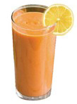

Food and Human Nutrition
Form Two

Figure 3.15: Pawpaw fool
Meals for a person with obesity
Obese people need to eat more fibre foods such as whole grains, vegetables and fruits. The fibre contained in the foods controls weight gain since it slows digestion, making the person feel full for a long time. Other protein source foods and plant oils should be included in the meal. These meals help to cut down energy intake from other foods.
An example of a diet for obese people
Breakfast: Mixed vegetable soup and a piece of orange, steamed sweet potato and a boiled egg
Mid morning: Cucumber
Lunch: Banana with peas stew and mixed fruit salad
Mid afternoon: A piece of mango
Supper: Mixed vegetable salad and plain yoghurt
Banana with peas stew
Ingredients (serve 2 people)
125 g green peas
4 green bananas
1 tomato
1 onion
3 g salt
3 cloves of garlic
1 carrot
1 sweet pepper
Water
1 tablespoon cooking oil
Coconut milk